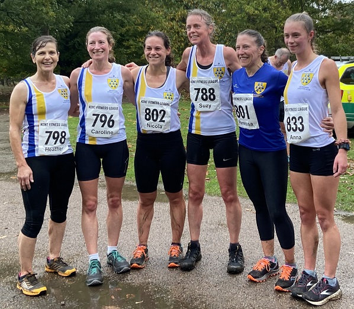

The first race in the 2022/23 Kent Fitness League series took place in Knole Park on Sunday October 30th, writes Jim Knight.
In wet and rainy conditions, the 555 competitors from 18 Kent athletics clubs tackled a gruelling 5 mile course up and down Knole’s hills.
Sevenoaks AC women, the defending Kent fitness League champions, performed outstandingly to win the women’s team competition.
Scoring runners were Caroline Fenwick (5th ) Suzy Claridge (9th & fastest W50), Nicola Glover (11th), Pauline Dalton (27th & second W55)
The fastest woman was Renata McDonnell from Deal Tri Club in a time of 33.42. The overall race winner was 17 year old Cameron Featherstone from Maidstone & Medway A.C. in an impressive time of 29.14.
With four in the first five, Maidstone and Medway were clear winners in the men’s team competition, ahead of Paddock Wood A.C.
Sevenoaks A.C men came home in 5th position. Scoring runners were Hamadel Nyaide (11th), Darius Sarchar (28th),Paul Fanti (30th), Ed Saunders (36th), Michael Lochead (39th), William Palmer (42nd), Harvey Taylor (69th), Jonathon Marsh (191st). In addition, Lionel Stielow received an award in recognition of his 100th KFL race.
In the overall team competition, Sevenoaks AC were the winners, thanks to the excellent performance of the women’s team.
It was a great effort by everyone in the club:- an organising team of Richard Thomas (Race Director) and James Nash (Course Manager) plus 20 marshals - and the club still managed to field 42 runners in the race, as follows:
| Ov Pos | Lg Pos | Bib | Runner | Age | Time | Club | Score | Rtg | # |
|---|---|---|---|---|---|---|---|---|---|
| 11 | 11 | 831 | Hamadel Ndiaye | 26 | 30:17 | Sevenoaks AC | M1 | 97.17 | Debut |
| 30 | 30 | 795 | Paul Fanti | 49 | 32:18 | Sevenoaks AC | V40:1 | 91.78 | Debut |
| 36 | 36 | 842 | Edmund Saunders | 40 | 32:47 | Sevenoaks AC | V40:2 | 90.08 | 18 |
| 38 | 38 | 841 | Darius Sarshar | 53 | 32:52 | Sevenoaks AC | V50:1 | 89.52 | 11 |
| 39 | 39 | 816 | Michael Lochead | 41 | 32:54 | Sevenoaks AC | M2 | 89.24 | 17 |
| 42 | 42 | 834 | William Palmer | 50 | 32:57 | Sevenoaks AC | V50:2 | 88.39 | 2 |
| 70 | 69 | 847 | Harvey Taylor | 18 | 34:24 | Sevenoaks AC | M3 | 80.74 | 7 |
| 76 | 74 | 827 | Shaun Mullen | 46 | 34:35 | Sevenoaks AC | NSBLS | 79.32 | 9 |
| 77 | 75 | 854 | Daniel Witt | 47 | 34:35 | Sevenoaks AC | NSBLS | 79.04 | 62 |
| 81 | 78 | 825 | Andrew Monk | 46 | 34:41 | Sevenoaks AC | NSBLS | 78.19 | Debut |
| 94 | 5 | 796 | Caroline Fenwick | 44 | 35:36 | Sevenoaks AC | V35 | 98.02 | 2 |
| 102 | 96 | 830 | Sebastian Naughton | 48 | 35:52 | Sevenoaks AC | NSBLS | 73.09 | 5 |
| 104 | 98 | 780 | Richard Alford-Smith | 46 | 36:04 | Sevenoaks AC | NSBLS | 72.52 | 10 |
| 115 | 9 | 788 | Suzy Claridge | 50 | 36:24 | Sevenoaks AC | V45 | 96.04 | 10 |
| 121 | 11 | 802 | Nicola Glover | 34 | 36:33 | Sevenoaks AC | F1 | 95.05 | 3 |
| 130 | 118 | 806 | Jim Harness | 54 | 37:00 | Sevenoaks AC | NSBLS | 66.86 | 16 |
| 135 | 122 | 799 | Jimmy George | 41 | 37:15 | Sevenoaks AC | NSBLS | 65.72 | 15 |
| 144 | 17 | 801 | Vanessa Gilmartin | 47 | 37:32 | Sevenoaks AC | NSBLS | 92.08 | 22 |
| 164 | 139 | 793 | Graham Dwyer | 50 | 38:17 | Sevenoaks AC | NSBLS | 60.91 | 16 |
| 169 | 143 | 824 | Andrew Milne | 40 | 38:25 | Sevenoaks AC | NSBLS | 59.77 | 32 |
| 171 | 145 | 785 | Simon Bishop | 58 | 38:32 | Sevenoaks AC | NSBLS | 59.21 | 3 |
| 174 | 148 | 809 | David Killpack | 37 | 38:39 | Sevenoaks AC | NSBLS | 58.36 | 2 |
| 180 | 27 | 790 | Pauline Dalton | 58 | 38:47 | Sevenoaks AC | V55 | 87.13 | 55 |
| 190 | 30 | 798 | Heather Fitzmaurice | 52 | 39:07 | Sevenoaks AC | NS | 85.64 | 79 |
| 191 | 161 | 844 | Jatinder Soomal | 40 | 39:08 | Sevenoaks AC | NSBLS | 54.67 | 14 |
| 195 | 164 | 818 | Alan Male | 52 | 39:16 | Sevenoaks AC | NSBLS | 53.82 | Debut |
| 216 | 180 | 811 | Leonard Lai King | 43 | 39:51 | Sevenoaks AC | NSBLS | 49.29 | 5 |
| 230 | 191 | 819 | Jonathan Marsh | 62 | 40:33 | Sevenoaks AC | V60 | 46.18 | 2 |
| 246 | 45 | 833 | Anna O'Donovan | 22 | 41:12 | Sevenoaks AC | NS | 78.22 | Debut |
| 251 | 205 | 849 | Anthony Waldron | 55 | 41:17 | Sevenoaks AC | NS | 42.21 | 30 |
| 285 | 228 | 805 | Simon Hallpike | 69 | 42:30 | Sevenoaks AC | NS | 35.69 | 56 |
| 303 | 63 | 828 | Katrina Murphy | 34 | 43:10 | Sevenoaks AC | NS | 69.31 | Debut |
| 304 | 64 | 852 | Lucy Wilkes | 43 | 43:17 | Sevenoaks AC | NS | 68.81 | 6 |
| 316 | 248 | 837 | Sham Pickard | 52 | 43:55 | Sevenoaks AC | NS | 30.03 | Debut |
| 323 | 71 | 843 | Sarah Shewell | 63 | 44:13 | Sevenoaks AC | NS | 65.35 | 118 |
| 327 | 74 | 856 | Samantha Znetyniak | 47 | 44:20 | Sevenoaks AC | NS | 63.86 | 9 |
| 333 | 258 | 789 | Duncan Cochrane | 65 | 44:39 | Sevenoaks AC | NS | 27.20 | 36 |
| 346 | 264 | 792 | Chris Desmond | 59 | 45:08 | Sevenoaks AC | NS | 25.50 | 83 |
| 405 | 107 | 803 | Glenda Goscomb | 64 | 47:52 | Sevenoaks AC | NS | 47.52 | 6 |
| 452 | 135 | 848 | Ly Truong | 37 | 50:20 | Sevenoaks AC | NS | 33.66 | Debut |
| 453 | 136 | 817 | Mandy Lock | 60 | 50:21 | Sevenoaks AC | NS | 33.17 | 2 |
| 476 | 329 | 846 | Lionel Stielow | 73 | 51:56 | Sevenoaks AC | NS | 7.08 | 21 |
The full results are here.

The Kent Fitness League is a series of cross-country races between the 18 registered Athletics Clubs in Kent. Any number of club members can compete, but 12 are needed to score in the team competition – 8 men (of whom one must be aged 60+, two must be 50+ and two 40+) and 4 women (of whom one must be aged 55+ one 45+ and one 35+).
The next race in the series will be in Swanley Park on November 11th.